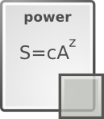

Models

Currently, mmSAR handles 8 non linear SAR models such as the power SAR model and others :
| Name | Formula | Parameters | Shape | Asymptotic |
|---|---|---|---|---|
| power | S = cAz | 2 | convex | no |
| exponential | S = c + zlog(A) | 2 | convex | no |
| negative exponential | S = c(1 - exp(-zA)) | 2 | convex | yes |
| Monod | S = (cA) / (z + A) | 2 | convex | yes |
| rational function | S = (c + zA) / (1 + fA) | 3 | convex | yes |
| logistic | S = c / (1 + exp(-zA+f) | 3 | sigmoid | yes |
| Lomolino | S = c / 1 + (zlog(f/A)) | 3 | sigmoid | yes |
| cumulative Weibull | S = c(1 - exp(-zAf)) | 3 | sigmoid | yes |
mmSAR handle SAR models as list-objects. A model is a list of 8 elements (examples ar given for the exponential model) :
- $name : a character string specifying the name of the model (ex: "expo")
- $formula : an R expression with named parameters (ex: expression(s == z * log(a) + c) )
- $paramnumber : a numeric specifying the numbers of parameters in the function (ex: 2)
- $paramnames : a vector of character string of length $paramnumber specifying the parameters names, as in $formula (ex: c("c","z") )
- $parLim : a vector of character string of length $paramnumber specifying the parameters limits from 'R' for (-∞;+∞), 'Rplus' for [0;+∞) or 'unif' for [0;1] (ex: c("R","Rplus"))
- $fun : an R function corresponding to the model function (ex : function(par,data){if(length(data)>1) d=data[[1]] else d=data; s = par[2] * log(d) + par[1]; names(s)=c("s.expo"); as.vector(s)} )
- $rssfun : an R function corresponding to the model Residual Sum of Squares function (ex : function(par,data,opt){if(opt)par=backLink(par,expo$parLim) ; sum( (data[[2]] - (par[2] * log(data[[1]]) + par[1]) ) ^2 ) } )
- $init : an R function corresponding to an initial values calculation for the fitting algorithm, this is a model specific function as $fun adn $rssfun (ex: function(data){semilog.data = data.frame(log(data[[1]]),data[[2]]) ; names(semilog.data)=c("a","s") ; par=lm(s~a,semilog.data)$coefficients ; names(par)=c("c","z") ; par } )
To load a model, for example the exponential model use :
load(expo)